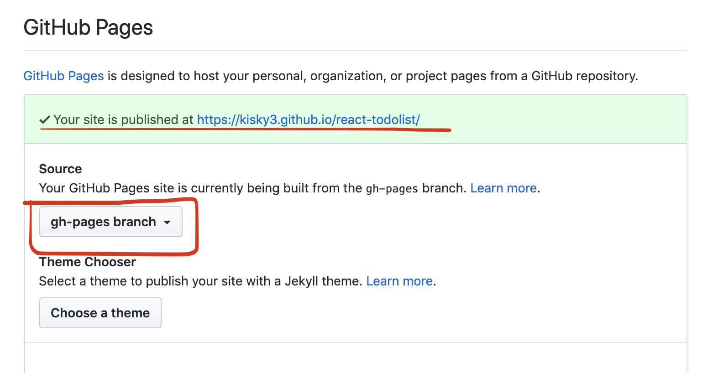

Deploying React Applications to Github Pages
把React项目部署到Github Page线上环境
1. 在github上新建仓库
貌似必须要新建仓库，如果在已有仓库的分支下想预览不成功（因为并不是master，所以也会对别的分支有影响.
2. 将本地代码同步
参照新建仓库里的说明初始化并push就好.
3. 修改本地React项目的 package.json文件
配置homepage
这里需要把你的github仓库地址稍微修改一下，例如我的”homepage”: “https://Kisky3.github.io/react-todolist".
配置发布选项
在scripts里添加以下两行
predeploy:是将你的项目预编译成静态文件放在build文件夹
deploy:是使用gh-pages 部署你的build文件夹下的内容.
1 | "scripts": { |
修改后的package.json
1 | { |
安装 gh-pages
1 | npm install gh-pages --save-dev |
部署项目到github page上
1 | npm run deploy |
4. GIthub上的分支切换
配置完之后，打开github上的仓库，你会发现原先的项目多了一个gh-pages分支，里面存放的是我们打包编译完成之后的静态文件。
一定要手动切换到gh-pages分支 而不是master！

再切换到setting下，我们可以看到现在项目已经被成功部署到 https://Kisky3.github.io/react-todolist 上了
打开 https://Kisky3.github.io/react-todolist 检验是否能预览